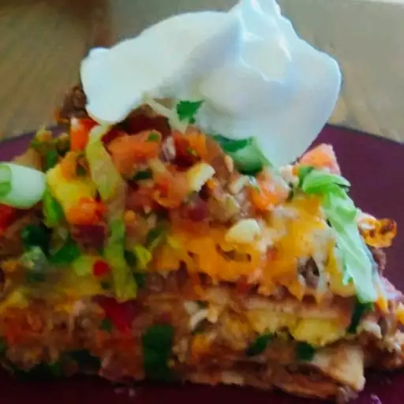

Mexican Pizza

This Mexican pizza recipe layers delicious seasoned ground beef and
refried beans between two crisp tortillas. Top with salsa, cheese,
tomatoes, and jalapeño for incredible flavor in every bite!
Ingredients:
- 1/2 Pound Ground Beef
- 1 Medium Onion, Diced
- 1 Clove Garlic, Minced
- 1 Tablespoon Chili Powder
- 1 Teaspoon Ground Cumin
- 1/2 Teaspoon Paprika
- 1/2 Teaspoon Salt
- 1/2 Teaspoon Black Pepper
- 1 (16 ounce) Can Refried Beans
- 4 (10 inch) Flour Tortillas
- 1/2 Cup Salsa
- 1 Cup Shredded Cheddar Cheese
- 1 Cup Shredded Monterey Jack Cheese
- 2 Green Onions, Chopped
- 2 Tomatoes, Diced
- 1/4 Cup Thinly Sliced Jalapeño Pepper
- 1/4 Cup Sour Cream (Optional)
Instructions:
- Cook the beef with onions and garlic, drain, and season.
- Place a tortilla on each pie plate and top with refried beans.
- Cover with the beef, top with another tortilla, and bake until the tortillas are crisp.
- Layer the toppings in this order: Salsa, cheeses, tomatoes, green onions, and jalapeño.
- Bake until the cheese is melted. Cool, then cut each pizza into four slices.
Home